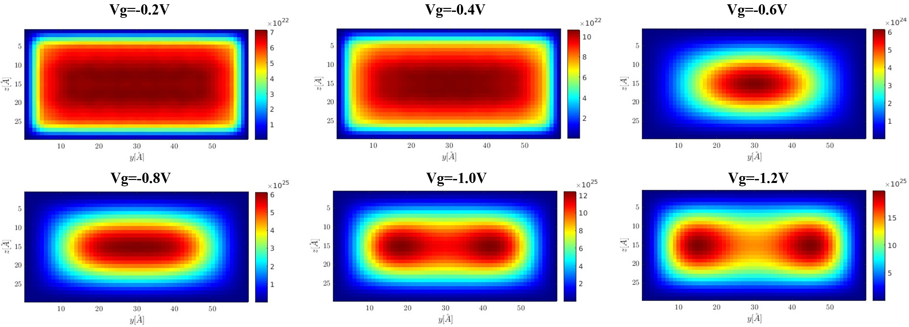
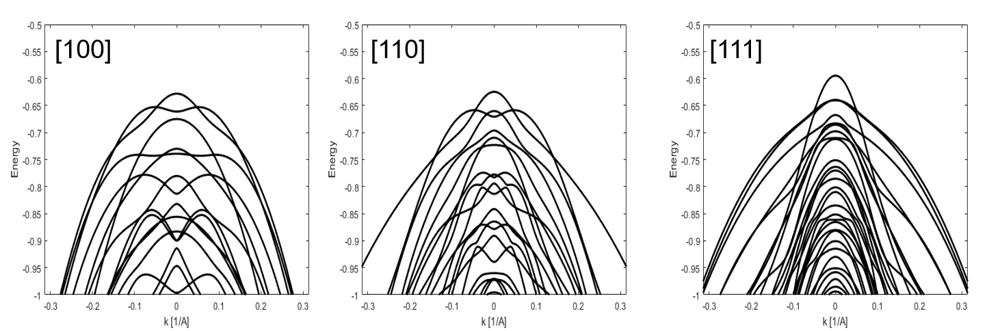
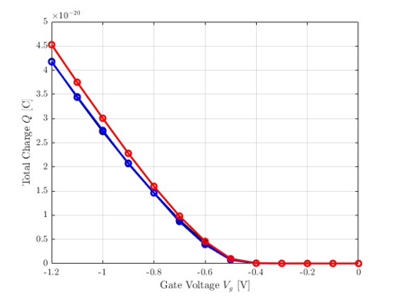
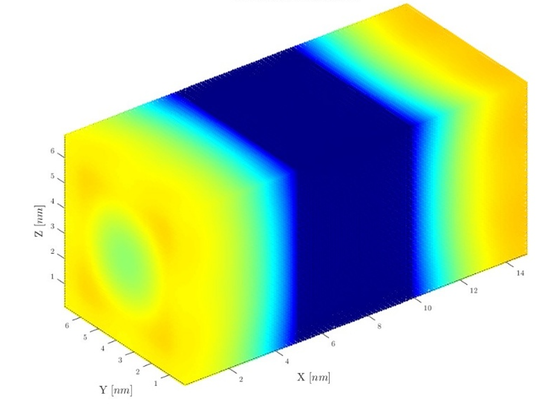
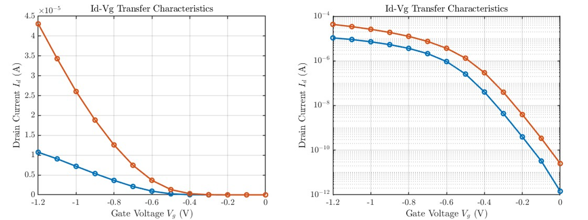
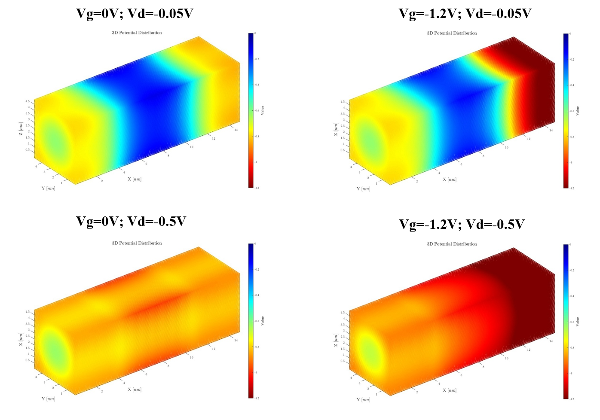
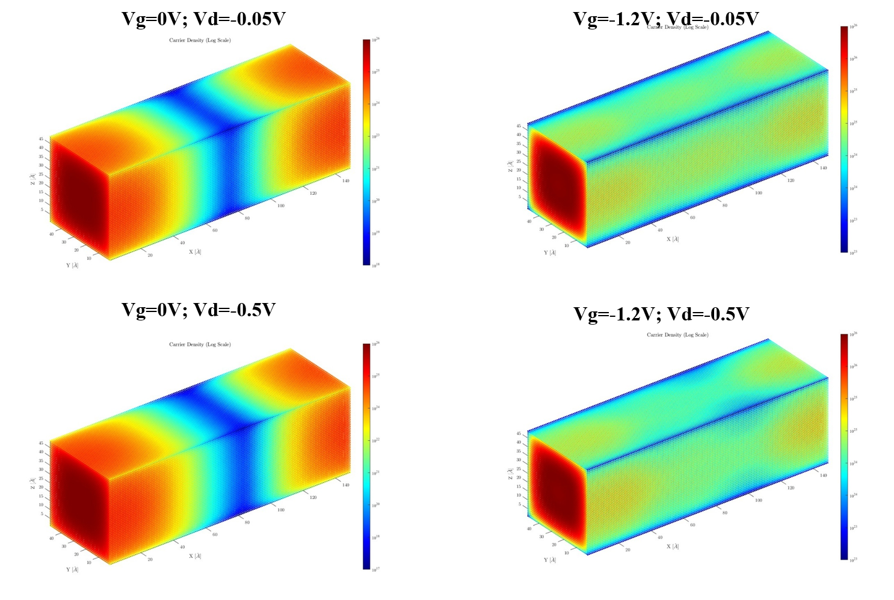
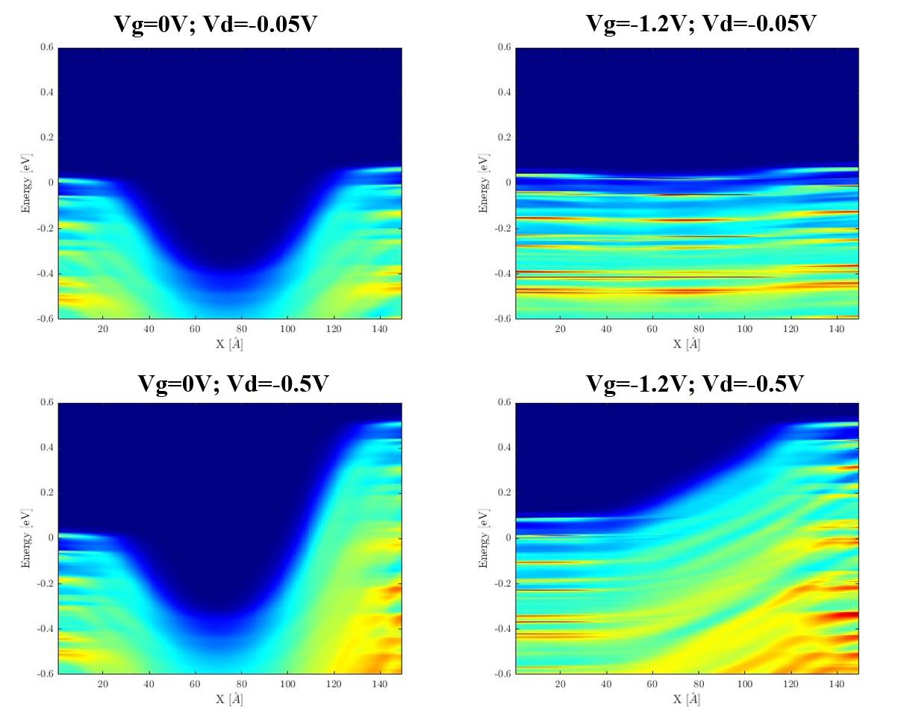
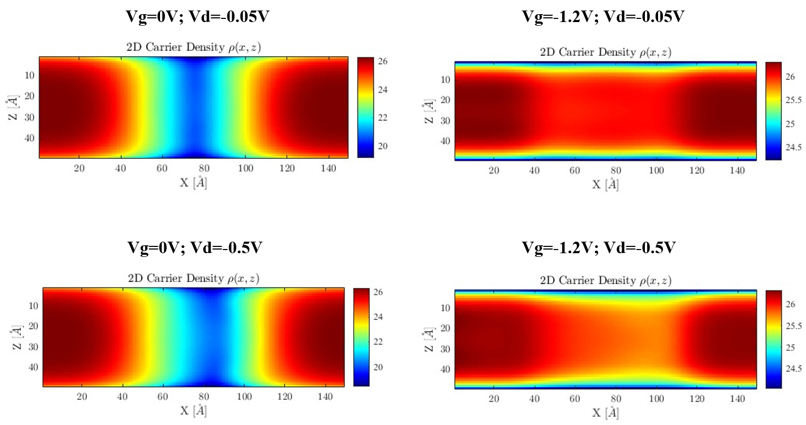

The overview of our simulator KP-NEGF framework based on Finite Difference Method.
2D cross‑section results
Spatial profiles across the device cross‑section: band structure, carrier density, electrostatic potential, and local density of states.

Figure 1 : The charge density profile of 2D cross-section under different gate voltage.
The size of Si cross-section is 6nm * 3nm, the thickness of oxide is 1nm;

Figure 2 : The band structure of Si nanowires along [100], [110], [111] direction
The size of Si cross-section is 5nm * 5nm

Figure 3: CV of 2D cross-section
The black denote [100], blue denote [110], red denote [111].
Methodology: 2D cross‑section simulations performed with in‑house KP‑NEGF framework (k·p Hamiltonian coupled with NEGF transport). Charge self‑consistency achieved up to 1e-5 tolerance.
3D simulation results full‑device
Quantum transport simulations in three‑dimensional real space: current‑voltage characteristics, PLDOS, volumetric carrier density, and potential landscapes.

Figure 5 : Gate-All-Around Nanowire device
H = W = 5nm, Tox = 1nm, L = 15nm.
Electrical & transport characteristics

Figure 6 : Comprehensive ID‑VGS characteristics (Linear and Log)
VDS=-0.05, VDS = -0.5V.

Figure 7 : The potential profile under different bias.
only show the silicon region.

Figure 8: The Charge density profile under different bias.
only show the silicon region.
3D carrier & potential maps

Figure 10 : PLDOS energy-resolved under different bias.

Figure 11 : The slice charge density at X-Z plane.
log scale show.
3D simulation details: Full‑band k·p Hamiltonian solved via recursive Green’s function algorithm. MPI parallelization enabled large‑scale device simulations.